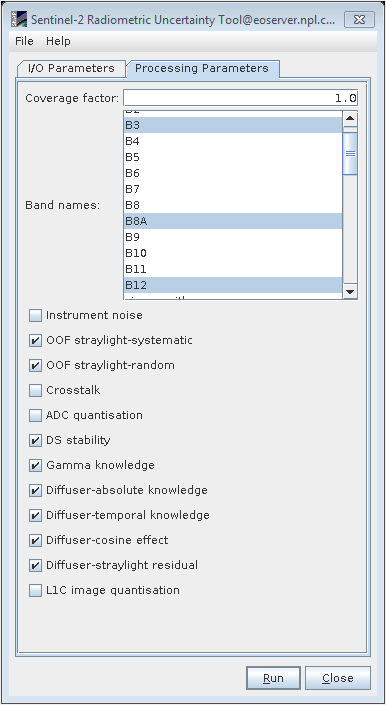
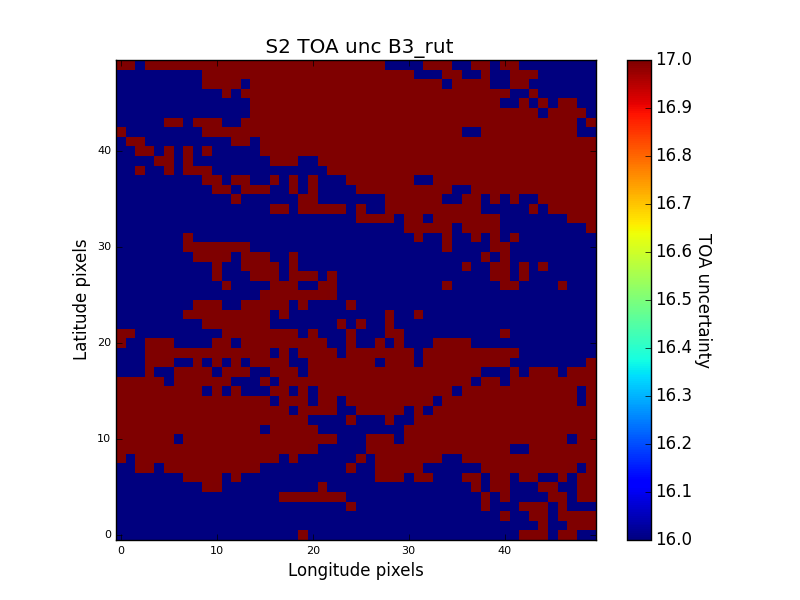
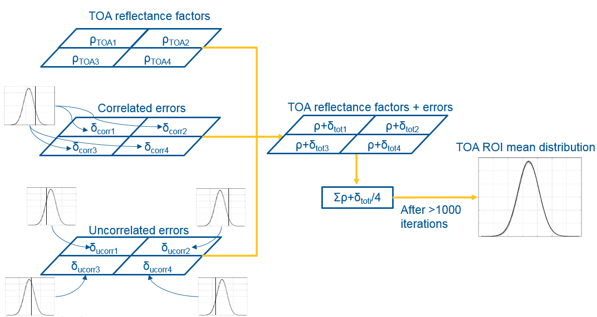
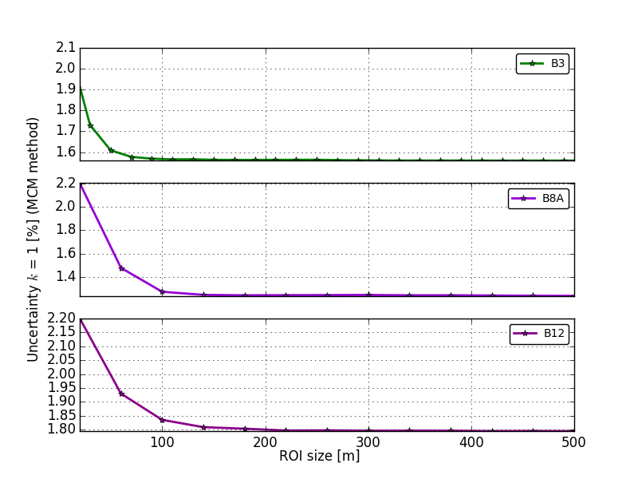

| S2-RUT Region-of-Interest uncertainty | |
The S2-RUT produces per-pixel uncertainty of ESA Sentinel-2 L1C MSI products at a specified confidence level. The uncertainty combination of different pixels in a Region-of-Interest (ROI) is not a trivial process. When combining the uncertainty from different pixels, the users should discard methods as the standard deviation of the mean or the straightforward combination of the pixels' uncertainty. Instead, the users need to consider the correlation between different pixels.
In order to calculate the uncertainty associated with a pixels' mean, two separate methods have been developed and they are separately explained in the following sections. More details can be found in the associated publication: [1]
The "select/deselect" method uses the capability of the S2-RUT to generate uncertainty images for selected uncertainty contributors to estimate the total uncertainty of the average reflectance of a ROI.
In this approach we assign each effect to being either correlated (not reduced by averaging over the ROI), or uncorrelated (reduced by averaging over the ROI) and select only the correlated effects, assuming that the uncorrelated effects become negligible at the scale of the ROI. Each effect is discussed in [1], which describes how decisions were made. Note that effects may be correlated in one dimension (e.g. spatial) and uncorrelated in another (e.g. temporal or spectral). The associated correlation should be evaluated experimentally if feasible by studying the combined variations of the quantities or using any available additional data pertaining to their interrelationship. Additionally, or in the absence of available data information based on experience and general knowledge can be utilised [2].
The method named "select/deselect" is intended to be as simple and quick as possible for the S2 L1C data users. In this method, the user interface incorporates a tick option to select individual effects, as shown below:

The user can run the S2-RUT with unselected instrument noise, Crosstalk, ADC_quantisation and L1C image quantisation since they are considered as nearly uncorrelated in time and space domain. In addition, the user can optionally unselect OOF straylight-random and Gamma knowledge since they are considered as correlated in time but uncorrelated in space.In such cases, the method can been adapted to produce two uncertainty images with the partially correlated contributions selected and deselected. The result is taken as the mean of the two ROI pixels for the two images.
The result is an uncertainty image with only correlated components. An example for S2A B3 in a 500m ROI in Gobabeb is shown below:

The result has minimum uncertainty variations (from 1.6% to 1.7%) and the value of either one pixel or the mean uncertainty over an specific area can be taken as an approximmation of the uncertainty associated to a pixels' mean.
The approach is very simple but has several limitations. For example, for ROIs of just a few pixels, the assumption that the random effects become insignificant may not be sufficient. Thus, this method must be tested to understand the validity of the ROI size at which this assumption is valid. The method also does not provide flexibility to cope with situations where the effect cannot be considered either perfectly correlated or perfectly uncorrelated.
The Monte-Carlo Method (MCM) determines the mean TOA reflectance factor for a ROI from the pixels over many iterations. At each iteration, the error associated with the reflectance factor is drawn from the distribution of each uncertainty contribution. If the uncertainty contribution is correlated between the pixels, the same sample is used for all the pixels in the ROI, whereas, if the uncertainty contribution is uncorrelated, a different error is drawn from the distribution for each pixel. Where there is partial correlation, two separate errors are drawn, one that is common to all pixels and one which is different from pixel to pixel. The distributions are set as normal or uniform distributions with a spread of values directly linked to the uncertainty as calculated directly from the S2-RUT. This uncertainty is obtained by generating an image of the specific uncertainty contribution. The method is illustrated below:

The RUT does incorporate from version 2, the possibility to replicate a full Monte-Carlo uncertainty propagation of the pixels in a ROI. The process is not straightforward but here below the execution is detailed step-by-step:
| Contributor | Tag |
|---|---|
| Instrument noise | _rutunoise |
| OOF straylight systematic | _rutu_stray_sys |
| ADC quantisation | _rutADC |
| DS stability | _rutds |
| L1C image quantisation | _rutuL1Cquant |
ITERPOINTS = 2000 # Number of
iteration points that MonteCarlo performs
# append the two folder directories so that can import the classes inside.
ROI_PATH = '/home/data/UncertaintyGobabeb' # contains the uncertainty products for each site and
stores the results
S2_DATA = '/home/data/S2Gobabeb' # here the specified S2 L1C products are read
# It is only prepared to process the *.dim files.
UNC_FILE = "S2A_MSIL1C_20170609T084601_N0205_R107_T33KWP_20170609T090644_rut.dim"
ROIUNC_FILE = "S2A_MSIL1C_20170609T084601_N0205_R107_T33KWP_20170609T090644_rutroi.dim"
S2FILE = os.path.join("S2A_MSIL1C_20170609T084601_N0205_R107_T33KWP_20170609T090644.SAFE",
"MTD_MSIL1C.xml")
LAT = -23.6
LON = 15.119
# In order to work, the ROI width and height must be the same.
W = 500
H = 500
These settings read the S2 product (S2FILE) from
the S2DATA
folder. The UNC_FILE
and ROIUNC_FILE
are contained in ROI_PATH.
Note that this same folder must also contain the uncertainty images of specific contributors.Here LAT,LON,W,H
describe the latitude, longitude, width and lenght of the ROI respectively. In this version of the script,
both width and length must be set at the same value
>>import sys
>>sys.path.append("PATH_TO_SNAP-RUT/snap-rut/src/test/python")
>>import s2roiunc_test
>>s2roiunc = s2roiunc_test.S2ROIuncprocessor()
>>s2roiunc.MCMmethod()
ROI_PATH. For the
settings here described this is the plot containing the MonteCarlo simulation:
